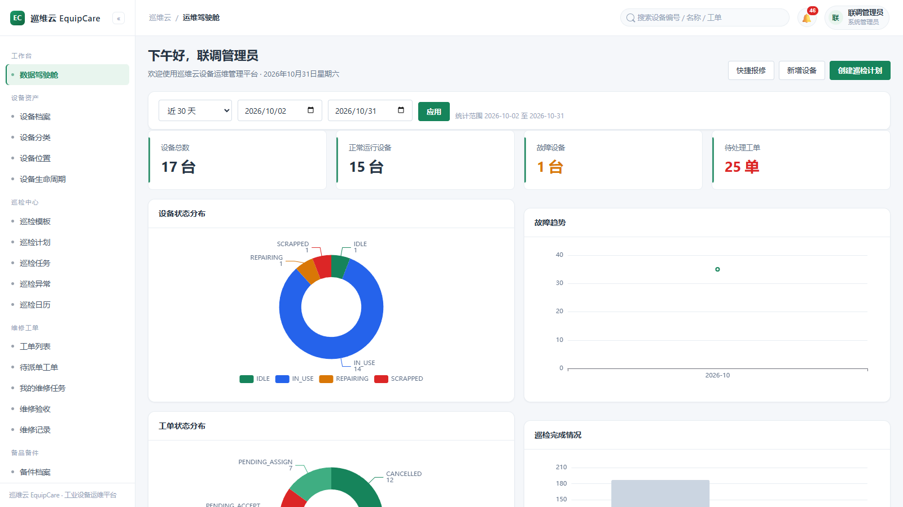
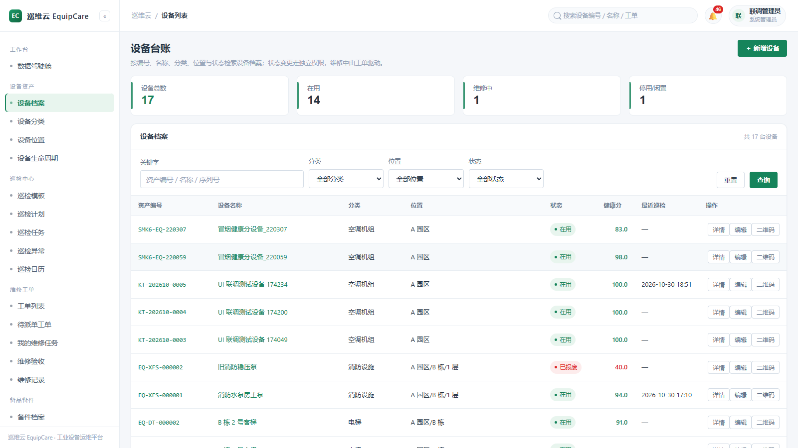
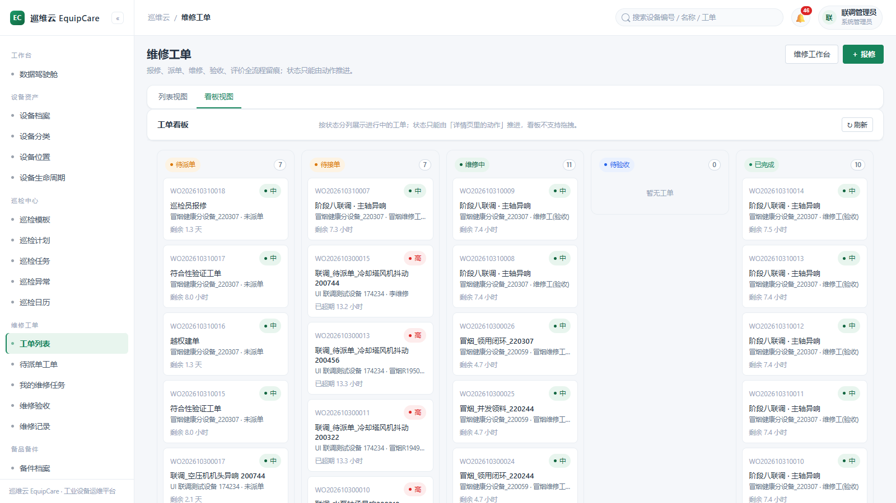
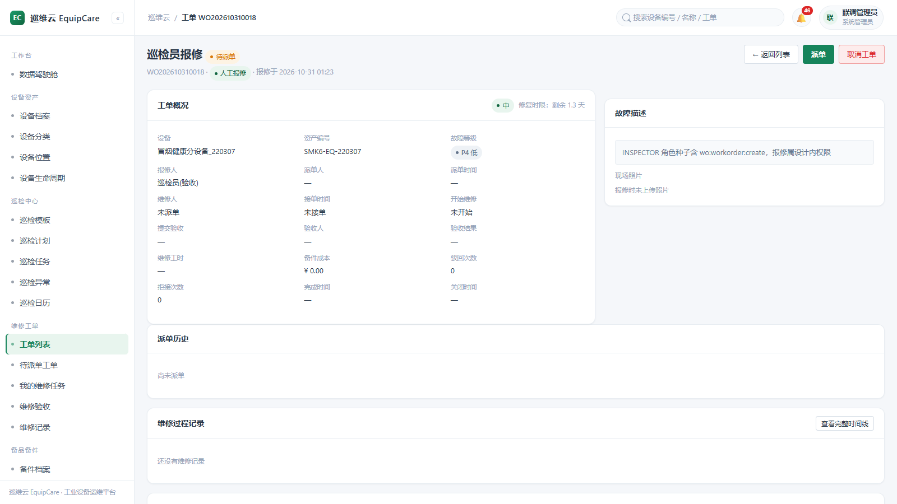
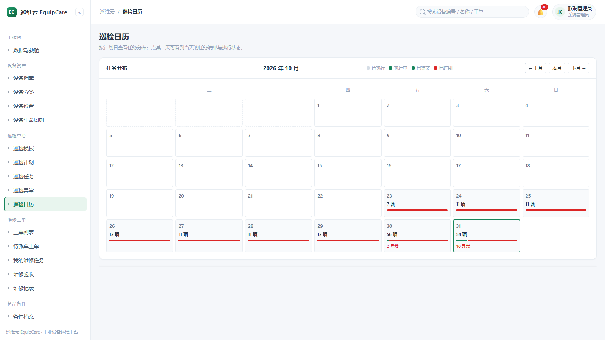
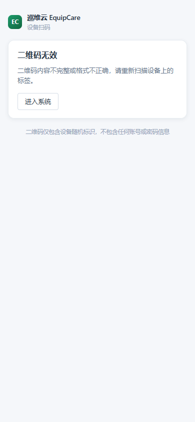
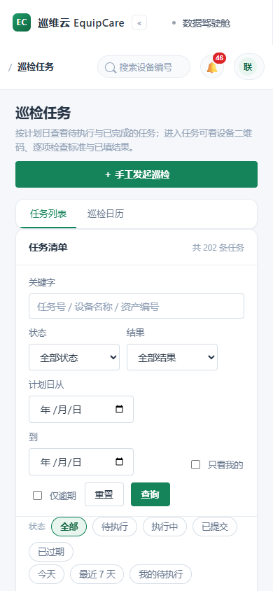
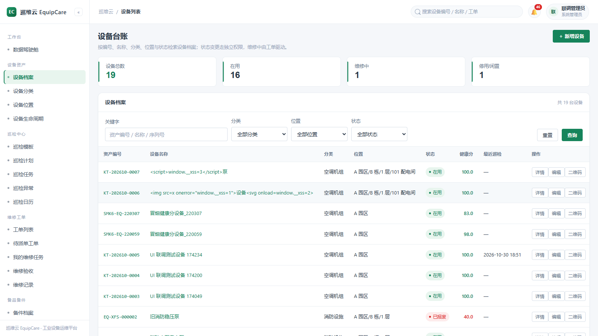

新一代开源 CMMS/EAM 设备巡检维保平台：扫码巡检 · 七态工单状态机 · SLA 预警 · 事务性 Outbox 领域事件 · SSE 秒级推送 · AI 维修副驾 —— 架构方向由 ArchUnit 测试守护。
MIT 开源 · Docker Compose 一键部署 · AI 可接豆包 / 智谱 / DeepSeek
从台账建档到报废归档，每一次巡检、每一张工单、每一个备件都留痕可溯。
服务端 ZXing 生成二维码，分类/位置树、生命周期状态机、附件照片留证。
模板 → 计划 → 定时任务生成（含停机回补）→ 手机扫码执行 → 异常自动转工单，巡检日历与统计。
CAS 乐观锁防并发冲突，动作白名单按钮，派单/拒接/转派/强制转派、验收评价全留痕。
按故障等级动态计算响应/修复时限，WARN→OVERDUE 分级推进，当日去重的升级通知。
只插入的出入库流水、工单领用与退料、安全库存预警、备件成本自动进工单。
规则完全可解释的多维评分（工单/超时/异常/逾期扣分 + 奖励项），每日快照与趋势。
领域事件与业务同事务落库，崩溃自动补投、指数退避、判死告警——不丢事件的模块化单体。
一次性票据鉴权长连接：新消息/工单流转/SLA·库存·异常提醒直达，断线退避重连回退轮询。
原生 ES Module 零构建、28 个页面、暗色模式、摄像头扫码（BarcodeDetector）、离线外壳缓存。
全部为系统实际运行时的 Playwright 抓屏，更多 144 张存档见仓库 docs/screenshots。








Maven 六模块依赖严格分层——业务模块禁止依赖框架层、common 禁止反向依赖，全部由 ArchUnit 测试在 CI 中强制。
// 业务事务内：状态变更与事件同生共死 casUpdateStatus(order) + statusLog.insert(order) └── 同事务 ──▶ event_outbox(PENDING) ├── afterCommit 快速投递 ──▶ OutboxDispatcher 原子认领 └── 崩溃恢复：每 10s 补投 · 指数退避 5s→10min · 8 次判死 └──▶ 事件桥接 ──▶ 站内消息 + SSE 秒级推送
OpenAI 兼容协议，豆包 / 智谱 GLM / DeepSeek 任选；默认关闭，fail-open——不配 Key 系统功能零影响。
# 前置：安装 Docker 与 Docker Compose git clone https://github.com/Leterhong/EquipCare.git cd EquipCare/equipcare-server cp deploy/env.example .env # 修改密码与 JWT 密钥 docker compose up -d # mysql + redis + backend + nginx # 首次创建管理员（执行一次后请关闭 bootstrap） docker compose exec backend java -jar /app/app.jar \ --equipcare.bootstrap.enabled=true \ --equipcare.bootstrap.username=admin \ --equipcare.bootstrap.password='你的强口令' \ --equipcare.bootstrap.real-name=系统管理员 # 打开 http://localhost 登录即用 ✅
工厂设备科 · 物业设施 · 实验室/医院后勤 · 连锁门店维保管理
以及需要一个架构干净的 Spring Boot 模块化单体参考实现的团队与学习者